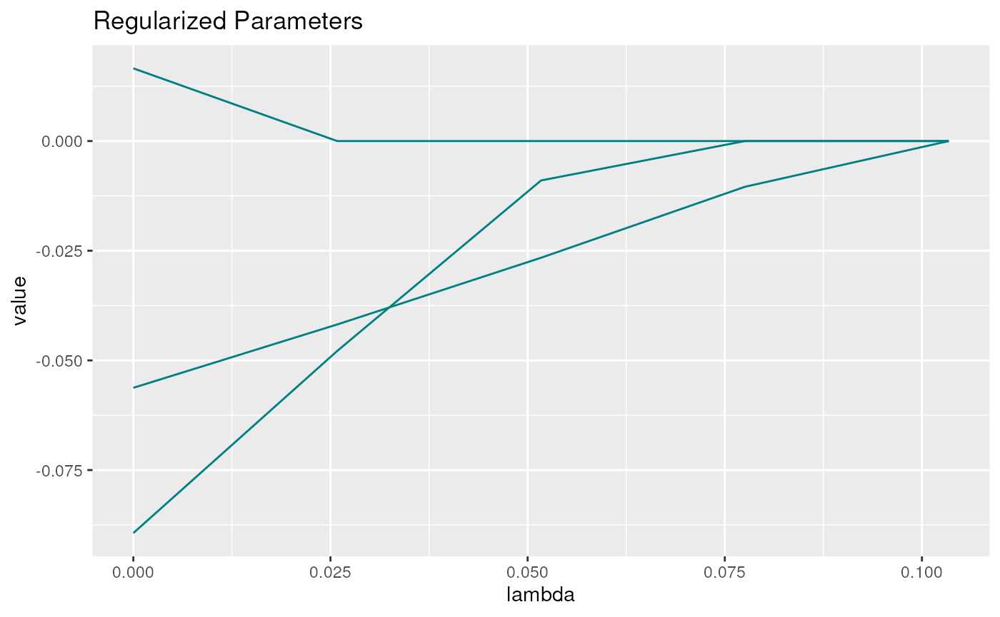
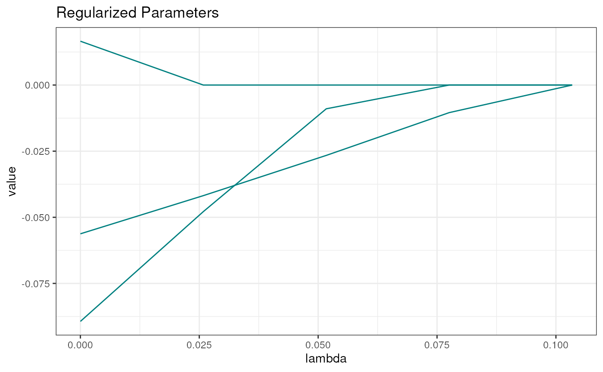

lessSEM
lessSEM.RmdRegularized Structural Equation Modeling
Regularized structural equation modeling (REGSEM) has been proposed by Jacobucci et al. (2016) and Huang et al. (2017). The objective is to reduce overfitting in small samples and to allow for more flexibility. The general idea is to regularize some parameters towards zero. To this end, a penalty function \(p(\pmb\theta)\) is added to the vanilla objective function. In lessSEM, this objective function is given by the full information maximum likelihood function \(F_{\text{ML}}(\pmb\theta)\). The new objective function is defined as:
\[F_{\text{REGSEM},\lambda}(\pmb\theta) = F_{\text{ML}}(\pmb\theta)+ \lambda N p(\pmb\theta)\]
- \(F_{\text{ML}}(\pmb\theta)\) wants all parameters to be close to the ordinary maximum likelihood estimates
- \(p(\pmb\theta)\) wants regularized parameters to be close to zero
- \(\lambda\) allows us to fine tune which of the two forces mentioned above gets more influence on the final parameter estimates
- \(N\) is the sample size. Scaling with \(N\) is done to stay consistent with results returned by regsem and lslx.
There are many different penalty functions which could be used. In lessSEM, we have implemented the following functions:
\[ \begin{array}{l|ll} \text{penalty} & \text{function} & \text{reference}\\ \hline \text{ridge} & p( x_j) = \lambda x_j^2 & \text{(Hoerl & Kennard, 1970)}\\ \text{lasso} & p( x_j) = \lambda| x_j| & \text{(Tibshirani, 1996)}\\ \text{adaptiveLasso} & p( x_j) = \frac{1}{w_j}\lambda| x_j| & \text{(Zou, 2006)}\\ \text{elasticNet} & p( x_j) = \alpha\lambda|x_j| + (1-\alpha)\lambda x_j^2 & \text{(Zou & Hastie, 2005)}\\ \text{cappedL1} & p( x_j) = \lambda \min(| x_j|, \theta); \theta > 0 & \text{(Zhang, 2010)}\\ \text{lsp} & p( x_j) = \lambda \log(1 + |x_j|\theta); \theta > 0 & \text{(Candès et al., 2008)} \\ \text{scad} & p( x_j) = \begin{cases} \lambda |x_j| & \text{if } |x_j| \leq \lambda\\ \frac{-x_j^2 + 2\theta\lambda |x_j| - \lambda^2}{2(\theta -1)} & \text{if } \lambda < |x_j| \leq \lambda\theta \\ (\theta + 1) \lambda^2/2 & \text{if } |x_j| \geq \theta\lambda\\ \end{cases}; \theta > 2 & \text{(Fan & Li, 2001)} \\ \text{mcp} & p( x_j) = \begin{cases} \lambda |x_j| - x_j^2/(2\theta) & \text{if } |x_j| \leq \theta\lambda\\ \theta\lambda^2/2 & \text{if } |x_j| > \lambda\theta \end{cases}; \theta > 0 & \text{(Zhang, 2010)} \end{array} \]
Objectives
The objectives of lessSEM are to provide …
- a flexible framework for regularizing SEM and
- optimizers for other SEM packages which can be used with an
interface similar to
optim.
Regularizing SEM
lessSEM is heavily inspired by the regsem package. It also builds on lavaan to set up the model.
Setting up a model
First, start with lavaan:
library(lavaan)
#> This is lavaan 0.6-14
#> lavaan is FREE software! Please report any bugs.
library(lessSEM)
set.seed(4321)
# let's simulate data for a simple
# cfa with 7 observed variables
data <- lessSEM::simulateExampleData(N = 50,
loadings = c(rep(1,4),
rep(0,3))
)
head(data)
#> y1 y2 y3 y4 y5 y6
#> [1,] -0.1737175 -0.1970204 1.1888412 1.8520403 0.16257957 1.8825526
#> [2,] -1.5179940 0.9029781 -0.1726986 -0.3596920 -0.02092956 -0.5798953
#> [3,] 0.6136418 0.2578986 -0.1359237 0.7703602 0.23502463 0.2001872
#> [4,] -0.5920933 0.2157830 1.6784758 1.8568433 -0.60458482 0.2219578
#> [5,] 0.0763996 -1.1442382 -2.8122156 0.4899892 0.03453494 2.0457604
#> [6,] 2.2504896 2.9742206 0.4353705 1.2338364 0.04693253 -0.6438847
#> y7
#> [1,] 1.1383999
#> [2,] 0.9020861
#> [3,] 0.7986506
#> [4,] 0.4736751
#> [5,] -2.6721417
#> [6,] -1.1386235
# we assume a single factor structure
lavaanSyntax <- "
f =~ l1*y1 + l2*y2 + l3*y3 + l4*y4 + l5*y5 + l6*y6 + l7*y7
f ~~ 1*f
"
# estimate the model with lavaan
lavaanModel <- cfa(lavaanSyntax,
data = data)Next, decide which parameters should be regularized. Let’s go with l5-l7. In lessSEM, we always use the parameter labels to specify which parameters should be regularized!
regularized <- c("l5", "l6", "l7")
# tip: we can use paste to make this easier:
regularized <- paste0("l", 5:7)Finally, we set up the regularized model. To this end, we must first decide which penalty function we want to use. If we want to shrink parameters without setting them to zero, we can use ridge regularization. Otherwise, we must use any of the other penalty functions mentioned above. In lessSEM, there is a dedicated function for each of these penalties. The names of these functions are identical to the “penalty” column in the table above. For instance, let’s have a look at the lasso penalty:
fitLasso <- lasso(lavaanModel = lavaanModel,
regularized = regularized,
nLambdas = 5)Plot the paths to see what is going on:
plot(fitLasso)
Note that the parameters are pulled towards zero as \(\lambda\) increases. Note also that we did
not specify specific values for \(\lambda\) in the lasso function above.
Instead, we only specified how many \(\lambda\)s we want to have
(nLambdas=50). If we use the lasso or adaptive lasso,
lessSEM can automatically compute which \(\lambda\) is necessary to set all
parameters to zero. This is currently not supported for any of the other
penalties.
The plots returned by lessSEM are either ggplot2 elements (in case of a single tuning parameter), or created with plotly (in case of 2 tuning parameters). You can change a plot post-hoc:

The coef function gives access to all parameter
estimates:
coef(fitLasso)
#>
#> Tuning ||--|| Estimates
#> ------- ------- ||--|| ---------- ---------- ---------- ---------- ----------
#> lambda alpha ||--|| l2 l3 l4 l5 l6
#> ======= ======= ||--|| ========== ========== ========== ========== ==========
#> 0.1034 1.0000 ||--|| 0.7523 0.7536 0.5742 . .
#> 0.0776 1.0000 ||--|| 0.7477 0.7480 0.5720 -0.0104 .
#> 0.0517 1.0000 ||--|| 0.7399 0.7396 0.5688 -0.0266 .
#> 0.0259 1.0000 ||--|| 0.7301 0.7332 0.5677 -0.0418 .
#> 0.0000 1.0000 ||--|| 0.7239 0.7318 0.5688 -0.0562 0.0166
#>
#>
#> ---------- ---------- ---------- ---------- ---------- ---------- ----------
#> l7 y1~~y1 y2~~y2 y3~~y3 y4~~y4 y5~~y5 y6~~y6
#> ========== ========== ========== ========== ========== ========== ==========
#> . 0.8812 1.1477 1.9274 1.0804 0.5710 0.9628
#> . 0.8742 1.1523 1.9331 1.0818 0.5705 0.9628
#> -0.0090 0.8632 1.1602 1.9416 1.0838 0.5697 0.9628
#> -0.0479 0.8529 1.1706 1.9481 1.0841 0.5690 0.9628
#> -0.0894 0.8491 1.1779 1.9496 1.0830 0.5685 0.9626
#>
#>
#> ----------
#> y7~~y7
#> ==========
#> 1.5320
#> 1.5320
#> 1.5312
#> 1.5282
#> 1.5255Now, let’s assume you also want to try out the scad penalty. In this
case, all you have to do is to replace the lasso() function
with the scad() function:
fitScad <- scad(lavaanModel = lavaanModel,
regularized = regularized,
lambdas = seq(0,1,length.out = 4),
thetas = seq(2.1, 5,length.out = 2))The scad penalty has two tuning parmeters \(\lambda\) and \(\theta\). The naming follows that used by Gong et al. (2013). We can plot the results again, however this requires the plotly package and is currently not supported in Rmarkdown.
plot(fitScad)The parameter estimates can again be accessed with the
coef() function:
coef(fitScad)
#>
#> Tuning ||--|| Estimates
#> ------- ------- ||--|| ---------- ---------- ---------- ---------- ----------
#> lambda theta ||--|| l2 l3 l4 l5 l6
#> ======= ======= ||--|| ========== ========== ========== ========== ==========
#> 0.0000 2.1000 ||--|| 0.7240 0.7320 0.5689 -0.0562 0.0166
#> 0.3333 2.1000 ||--|| 0.7520 0.7533 0.5741 . .
#> 0.6667 2.1000 ||--|| 0.7522 0.7535 0.5742 . .
#> 1.0000 2.1000 ||--|| 0.7523 0.7536 0.5742 . .
#> 0.0000 5.0000 ||--|| 0.7244 0.7326 0.5690 -0.0561 0.0167
#> 0.3333 5.0000 ||--|| 0.7520 0.7533 0.5741 . .
#> 0.6667 5.0000 ||--|| 0.7522 0.7535 0.5742 . .
#> 1.0000 5.0000 ||--|| 0.7523 0.7536 0.5742 . .
#>
#>
#> ---------- ---------- ---------- ---------- ---------- ---------- ----------
#> l7 y1~~y1 y2~~y2 y3~~y3 y4~~y4 y5~~y5 y6~~y6
#> ========== ========== ========== ========== ========== ========== ==========
#> -0.0894 0.8492 1.1778 1.9495 1.0829 0.5684 0.9626
#> . 0.8808 1.1480 1.9277 1.0804 0.5710 0.9628
#> . 0.8812 1.1478 1.9274 1.0804 0.5710 0.9628
#> . 0.8812 1.1478 1.9274 1.0804 0.5710 0.9628
#> -0.0894 0.8499 1.1774 1.9489 1.0828 0.5685 0.9626
#> . 0.8808 1.1480 1.9277 1.0804 0.5710 0.9628
#> . 0.8812 1.1478 1.9274 1.0804 0.5710 0.9628
#> . 0.8812 1.1478 1.9274 1.0804 0.5710 0.9628
#>
#>
#> ----------
#> y7~~y7
#> ==========
#> 1.5255
#> 1.5320
#> 1.5320
#> 1.5320
#> 1.5255
#> 1.5320
#> 1.5320
#> 1.5320Selecting a model
To select a model and report the final parameter estimates, you can use the AIC or BIC (other information criteria are also possible, but currently not implemented). There are two ways to use these information criteria.
First, you can compute them and select the model yourself:
AICs <- AIC(fitLasso)
head(AICs)
#> lambda alpha m2LL regM2LL nonZeroParameters convergence AIC
#> 1 0.10340364 1 1071.078 1071.078 10 TRUE 1091.078
#> 2 0.07755273 1 1071.033 1071.074 11 TRUE 1093.033
#> 3 0.05170182 1 1070.956 1071.048 12 TRUE 1094.956
#> 4 0.02585091 1 1070.851 1070.967 12 TRUE 1094.851
#> 5 0.00000000 1 1070.810 1070.810 13 TRUE 1096.810
fitLasso@parameters[which.min(AICs$AIC),]
#> lambda alpha l2 l3 l4 l5 l6 l7 y1~~y1 y2~~y2
#> 1 0.1034036 1 0.7522981 0.7536087 0.574216 0 0 0 0.8812245 1.147738
#> y3~~y3 y4~~y4 y5~~y5 y6~~y6 y7~~y7
#> 1 1.927356 1.080356 0.5710042 0.9628056 1.531997An easier way is to use the coef() function again:
coef(fitLasso, criterion = "AIC")
#>
#> Tuning ||--|| Estimates
#> ------- ------- ||--|| ---------- ---------- ---------- ---------- ----------
#> lambda alpha ||--|| l2 l3 l4 l5 l6
#> ======= ======= ||--|| ========== ========== ========== ========== ==========
#> 0.1034 1.0000 ||--|| 0.7523 0.7536 0.5742 . .
#>
#>
#> ---------- ---------- ---------- ---------- ---------- ---------- ----------
#> l7 y1~~y1 y2~~y2 y3~~y3 y4~~y4 y5~~y5 y6~~y6
#> ========== ========== ========== ========== ========== ========== ==========
#> . 0.8812 1.1477 1.9274 1.0804 0.5710 0.9628
#>
#>
#> ----------
#> y7~~y7
#> ==========
#> 1.5320Cross-Validation
A very good alternative to information criteria is the use of
cross-validation. In lessSEM, there is a dedicated
cross-validation function for each of the penalties discussed above.
Let’s look at the lsp() penalty this time. Now, for your
non-cross-validated lsp, you would use
fitLsp <- lsp(lavaanModel = lavaanModel,
regularized = regularized,
lambdas = seq(0,1,.1),
thetas = seq(.1,2,length.out = 4))To use a cross-validated version of the lsp, simply use the
cv prefix. The function is called cvLsp():
fitCvLsp <- cvLsp(lavaanModel = lavaanModel,
regularized = regularized,
lambdas = seq(0,1,.1),
thetas = seq(.1,2,length.out = 4))The best model can now be accessed with
coef(fitCvLsp)
#>
#> Tuning ||--|| Estimates
#> ------- ------- ||--|| ---------- ---------- ---------- ---------- ----------
#> lambda theta ||--|| l2 l3 l4 l5 l6
#> ======= ======= ||--|| ========== ========== ========== ========== ==========
#> 1.0000 0.1000 ||--|| 0.7520 0.7533 0.5741 . .
#>
#>
#> ---------- ---------- ---------- ---------- ---------- ---------- ----------
#> l7 y1~~y1 y2~~y2 y3~~y3 y4~~y4 y5~~y5 y6~~y6
#> ========== ========== ========== ========== ========== ========== ==========
#> . 0.8808 1.1480 1.9277 1.0804 0.5710 0.9628
#>
#>
#> ----------
#> y7~~y7
#> ==========
#> 1.5320Missing Data
Most psychological data sets will have missing data. In lessSEM, we follow the example of regsem and use the full information maximum likelihood function to account for this missingness. Identical to regsem, lessSEM expects that you already use the full information maximum likelihood method in lavaan.
# let's simulate data for a simple
# cfa with 7 observed variables
# and 10 % missing data
data <- lessSEM::simulateExampleData(N = 100,
loadings = c(rep(1,4),
rep(0,3)),
percentMissing = 10
)
head(data)
#> y1 y2 y3 y4 y5 y6
#> [1,] 0.60367543 -0.3206755 -0.5712115 0.36626658 0.6138552 0.8207451
#> [2,] 0.37497661 2.0100766 -1.5925242 -0.02983920 0.2409065 1.1250778
#> [3,] NA 0.8134143 1.7803075 3.27710938 -0.3651732 NA
#> [4,] -0.04379503 0.1369219 -1.9424719 0.40304282 -0.6435542 1.5412868
#> [5,] -0.32969221 NA -1.6536493 -2.20991516 1.2462449 0.6725163
#> [6,] 0.61738032 0.9116425 0.9196841 0.03340633 0.5553805 0.1209500
#> y7
#> [1,] 0.6346473
#> [2,] 0.8865902
#> [3,] -0.8283463
#> [4,] 0.0635044
#> [5,] NA
#> [6,] 2.0956358
# we assume a single factor structure
lavaanSyntax <- "
f =~ l1*y1 + l2*y2 + l3*y3 + l4*y4 + l5*y5 + l6*y6 + l7*y7
f ~~ 1*f
"
# estimate the model with lavaan
lavaanModel <- cfa(lavaanSyntax,
data = data,
missing = "ml") # important: use fiml for missing dataNote that we added the argument missing = 'ml' to the
lavaan model. This tells lavaan to use
the full information maximum likelihood function.
Next, pass this model to any of the penalty functions in lessSEM. lessSEM will automatically switch to the full information maximum likelihood function as well:
fitLasso <- lasso(lavaanModel = lavaanModel,
regularized = regularized,
nLambdas = 10)To check if lessSEM did actually use the full information maximum likelihood, we can compare the 2log-likelihood of lavaan and lessSEM when no penalty is used (\(\lambda = 0\)):
fitLasso <- lasso(lavaanModel = lavaanModel,
regularized = regularized,
lambdas = 0)
fitLasso@fits$m2LL
#> [1] 2034.104Compare this to:
-2*logLik(lavaanModel)
#> 'log Lik.' 2034.104 (df=20)Using multiple cores
By default, lessSEM will only use one computer core.
However, if a model has many parameters, parallel computations can be
considerably faster. Multi-Core support is therefore provided using the
RcppParallel package (Allaire et. al, 2023). To make
use of multiple cores, the number of cores must be specified in the
control argument (see below). Before doing that, it makes
sense to check how many cores the computer has:
library(RcppParallel)
# Print the number of threads (we call them cores for simplicity, but technically they are threads)
RcppParallel::defaultNumThreads()
#> [1] 2Note that using all cores can block the computer because there are no
resources left for other tasks than R. To use 2 cores, we can set
nCores = 2 as follows:
fitLasso <- lasso(lavaanModel = lavaanModel,
regularized = regularized,
nLambdas = 10,
control = controlGlmnet(nCores = 2))Note that multi-core support is only provided for SEM. Using the optimizers implemented in lessSEM for models other than SEM (e.g., in the lessLM package) will not automatically allow for multi-core execution.
Changing the optimizer
lessSEM comes with two specialized optimization procedures for elastic-net-type penalties: ista and glmnet. Currently, the default is glmnet for all elastic net variants (ridge, lasso, adaptive lasso, elastic net) and ista for all other penalties. Ista does not require the computation of a Hessian matrix. However, this comes at a price: ista optimization tends to call the fit and gradient function a lot more than glment. If you are using an elastic-net-type penalty (ridge, lasso, adaptive lasso, or elastic net), we recommend that you first test the glmnet optimizer and then switch to ista if glmnet results in errors due to the Hessian matrix. Switching to ista is done as follows:
fitLasso <- lasso(lavaanModel = lavaanModel,
regularized = regularized,
nLambdas = 10,
method = "ista", # change the method
control = controlIsta() # change the control argument
)Parameter transformations
lessSEM allows for parameter transformations. This
is explained in detail in the vignette Parameter-transformations (see
vignette("Parameter-transformations", package = "lessSEM")).
To provide a short example, let’s have a look at the political democracy
data set:
# example from ?lavaan::sem
library(lavaan)
modelSyntax <- '
# latent variable definitions
ind60 =~ x1 + x2 + x3
dem60 =~ y1 + a*y2 + b*y3 + c*y4
dem65 =~ y5 + a*y6 + b*y7 + c*y8
# regressions
dem60 ~ ind60
dem65 ~ ind60 + dem60
# residual correlations
y1 ~~ y5
y2 ~~ y4
y3 ~~ y7
y4 ~~ y8
y6 ~~ y8
'
lavaanFit <- sem(model = modelSyntax,
data = PoliticalDemocracy)Note that in the model estimated above, loadings on the latent variables are constrained to equality over time. We could also relax this assumption by allowing for time point specific loadings:
library(lavaan)
modelSyntax <- '
# latent variable definitions
ind60 =~ x1 + x2 + x3
dem60 =~ y1 + a1*y2 + b1*y3 + c1*y4
dem65 =~ y5 + a2*y6 + b2*y7 + c2*y8
# regressions
dem60 ~ ind60
dem65 ~ ind60 + dem60
# residual correlations
y1 ~~ y5
y2 ~~ y4
y3 ~~ y7
y4 ~~ y8
y6 ~~ y8
'
lavaanFit <- sem(model = modelSyntax,
data = PoliticalDemocracy)Deciding between both approaches can be difficult as there may be some parameters for which equality over time holds, while others violate the assumption. Here, transformations can be used to regularize differences between parameters. To this end, we define the transformations:
transformations <- "
// IMPORTANT: Our transformations always have to start with the follwing line:
parameters: a1, a2, b1, b2, c1, c2, delta_a2, delta_b2, delta_c2
// In the line above, we defined the names of the parameters which we
// want to use in our transformations. EACH AND EVERY PARAMETER USED IN
// THE FOLLOWING MUST BE STATED ABOVE. The line must always start with
// the keyword 'parameters' followed by a colon. The parameters must be
// separated by commata.
// Comments are added with double-backslash
// Now we can state our transformations:
a2 = a1 + delta_a2; // statements must end with semicolon
b2 = b1 + delta_b2;
c2 = c1 + delta_c2;
"Next, we have to pass the transformations variable to
the penalty function:
To check if measurement invariance can be assumed, we can select the best model using information criteria:
coef(lassoFit, criterion = "BIC")
#>
#> Tuning ||--|| Estimates
#> ------- ------- ||--|| ---------- ---------- ---------- ---------- ----------
#> lambda alpha ||--|| ind60=~x2 ind60=~x3 a1 b1 c1
#> ======= ======= ||--|| ========== ========== ========== ========== ==========
#> 0.2216 1.0000 ||--|| 2.1825 1.8189 1.2110 1.1679 1.2340
#>
#>
#> ----------- ----------- ----------- ---------- ---------- ----------
#> dem60~ind60 dem65~ind60 dem65~dem60 y1~~y5 y2~~y4 y3~~y7
#> =========== =========== =========== ========== ========== ==========
#> 1.4534 0.5935 0.8659 0.5552 1.5947 0.7807
#>
#>
#> ---------- ---------- ---------- ---------- ---------- ---------- ----------
#> y4~~y8 y6~~y8 x1~~x1 x2~~x2 x3~~x3 y1~~y1 y2~~y2
#> ========== ========== ========== ========== ========== ========== ==========
#> 0.6537 1.5350 0.0820 0.1177 0.4675 1.7929 7.3843
#>
#>
#> ---------- ---------- ---------- ---------- ---------- ---------- ------------
#> y3~~y3 y4~~y4 y5~~y5 y6~~y6 y7~~y7 y8~~y8 ind60~~ind60
#> ========== ========== ========== ========== ========== ========== ============
#> 5.0175 3.4074 2.2857 4.8977 3.5510 3.4511 0.4480
#>
#>
#> ------------ ------------ ---------- ---------- ----------
#> dem60~~dem60 dem65~~dem65 delta_a2 delta_b2 delta_c2
#> ============ ============ ========== ========== ==========
#> 3.9408 0.2034 . . .More details are provided in
vignette("Parameter-transformations", package = "lessSEM").
Experimental Features
The following features are relatively new and you may still experience some bugs. Please be aware of that when using these features.
From lessSEM to lavaan
lessSEM supports exporting specific models to lavaan. This can be very useful when plotting the final model. In our case, the best model is given by:
lambdaBest <- coef(rsem, criterion = "BIC")$lambda We can get the lavaan model with the parameters
corresponding to those of the regularized model with
lambda = lambdaBest as follows:
lavaanModel <- lessSEM2Lavaan(regularizedSEM = rsem,
lambda = lambdaBest)The result can be plotted with, for instance, semPlot:
Multi-Group Models and Definition Variables
lessSEM supports multi-group SEM and, to some
degree, definition variables. Regularized multi-group SEM have been
proposed by Huang (2018) and are implemented in lslx
(Huang, 2020). Here, differences between groups are regularized. A
detailed introduction can be found in
vignette(topic = "Definition-Variables-and-Multi-Group-SEM", package = "lessSEM").
Therein it is also explained how the multi-group SEM can be used to
implement definition variables (e.g., for latent growth curve
models).
Mixed Penalties
lessSEM allows for defining different penalties for
different parts of the model. This feature is new and very experimental.
Please keep that in mind when using the procedure. A detailed
introduction can be found in
vignette(topic = "Mixed-Penalties", package = "lessSEM").
To provide a short example, we will regularize the loadings and the
regression parameters of the Political Democracy data set with different
penalties. The following script is adapted from
?lavaan::sem.
model <- '
# latent variable definitions
ind60 =~ x1 + x2 + x3 + c2*y2 + c3*y3 + c4*y4
dem60 =~ y1 + y2 + y3 + y4
dem65 =~ y5 + y6 + y7 + c*y8
# regressions
dem60 ~ r1*ind60
dem65 ~ r2*ind60 + r3*dem60
'
lavaanModel <- sem(model,
data = PoliticalDemocracy)
# Let's add a lasso penalty on the cross-loadings c2 - c4 and
# scad penalty on the regressions r1-r3
mp <- lavaanModel |>
mixedPenalty() |>
addLasso(regularized = c("c2", "c3", "c4"),
lambdas = seq(0,1,.1)) |>
addLasso(regularized = c("r1", "r2", "r3"),
lambdas = seq(0,1,.2)) |>
fit()The best model according to the BIC can be extracted with:
coef(fitMp, criterion = "BIC")More information
We provide more information in the documentation of the individual
functions. For instance, see ?lessSEM::lasso for more
details on the lasso penalty. If you are interested in the general
purpose interface, have a look at ?lessEM::gpLasso,
?lesssEM::gpMcp, etc. To get more details on implementing
the lessSEM optimizers in your own package, have a look
at the vignettes vignette('General-Purpose-Optimization')
and vignette('The-optimizer-interface') and at the lessLM
package.
Table of the most relevant functions
Fitting regularized SEM:
| function name | what it does |
|---|---|
| ridge | ridge regularization of SEM |
| cvRidge | cross-validated ridge regularization of SEM |
| lasso | lasso regularization of SEM |
| cvLasso | cross-validated lasso regularization of SEM |
| adaptiveLasso | adaptive lasso regularization of SEM |
| cvAdaptiveLasso | cross-validated adaptive lasso regularization of SEM |
| elasticNet | elastic net regularization of SEM |
| cvElasticNet | cross-validated elastic net regularization of SEM |
| cappedL1 | cappedL1 regularization of SEM |
| cvCappedL1 | cross-validated cappedL1 regularization of SEM |
| lsp | lsp regularization of SEM |
| cvLsp | cross-validated lsp regularization of SEM |
| mcp | mcp regularization of SEM |
| cvMcp | cross-validated mcp regularization of SEM |
| scad | scad regularization of SEM |
| cvScad | cross-validated scad regularization of SEM |
Using the optimizers in lessSEM for general purpose optimization:
| function name | what it does |
|---|---|
| gpRidge | ridge regularization for general purpose optimization |
| gpLasso | lasso regularization for general purpose optimization |
| gpAdaptiveLasso | adaptive lasso regularization for general purpose optimization |
| gpElasticNet | elastic net regularization for general purpose optimization |
| gpCappedL1 | cappedL1 regularization for general purpose optimization |
| gpLsp | lsp regularization for general purpose optimization |
| gpMcp | mcp regularization for general purpose optimization |
| gpScad | scad regularization for general purpose optimization |
Using the optimizers in lessSEM for general purpose optimization with C++ functions:
| function name | what it does |
|---|---|
| gpRidgeCpp | ridge regularization for general purpose optimization |
| gpLassoCpp | lasso regularization for general purpose optimization |
| gpAdaptiveLassoCpp | adaptive lasso regularization for general purpose optimization |
| gpElasticNetCpp | elastic net regularization for general purpose optimization |
| gpCappedL1Cpp | cappedL1 regularization for general purpose optimization |
| gpLspCpp | lsp regularization for general purpose optimization |
| gpMcpCpp | mcp regularization for general purpose optimization |
| gpScadCpp | scad regularization for general purpose optimization |
References
R - Packages / Software
- lavaan Rosseel, Y. (2012). lavaan: An R Package for Structural Equation Modeling. Journal of Statistical Software, 48(2), 1–36. https://doi.org/10.18637/jss.v048.i02
- regsem: Jacobucci, R. (2017). regsem: Regularized Structural Equation Modeling. ArXiv:1703.08489 [Stat]. http://arxiv.org/abs/1703.08489
- lslx: Huang, P.-H. (2020). lslx: Semi-confirmatory structural equation modeling via penalized likelihood. Journal of Statistical Software, 93(7). https://doi.org/10.18637/jss.v093.i07
- fasta: Another implementation of the fista algorithm (Beck & Teboulle, 2009)
- ensmallen: Curtin, R. R., Edel, M., Prabhu, R. G., Basak, S., Lou, Z., & Sanderson, C. (2021). The ensmallen library for flexible numerical optimization. Journal of Machine Learning Research, 22, 1–6.
- RcppParallel Allaire J, Francois R, Ushey K, Vandenbrouck G, Geelnard M, Intel (2023). RcppParallel: Parallel Programming Tools for ‘Rcpp’. R package version 5.1.6, https://CRAN.R-project.org/package=RcppParallel.
Regularized Structural Equation Modeling
- Huang, P.-H., Chen, H., & Weng, L.-J. (2017). A Penalized Likelihood Method for Structural Equation Modeling. Psychometrika, 82(2), 329–354. https://doi.org/10.1007/s11336-017-9566-9
- Huang, P.-H. (2018). A penalized likelihood method for multi-group structural equation modelling. British Journal of Mathematical and Statistical Psychology, 71(3), 499–522. https://doi.org/10.1111/bmsp.12130
- Jacobucci, R., Grimm, K. J., & McArdle, J. J. (2016). Regularized Structural Equation Modeling. Structural Equation Modeling: A Multidisciplinary Journal, 23(4), 555–566. https://doi.org/10.1080/10705511.2016.1154793
Penalty Functions
- Candès, E. J., Wakin, M. B., & Boyd, S. P. (2008). Enhancing Sparsity by Reweighted l1 Minimization. Journal of Fourier Analysis and Applications, 14(5–6), 877–905. https://doi.org/10.1007/s00041-008-9045-x
- Fan, J., & Li, R. (2001). Variable selection via nonconcave penalized likelihood and its oracle properties. Journal of the American Statistical Association, 96(456), 1348–1360. https://doi.org/10.1198/016214501753382273
- Hoerl, A. E., & Kennard, R. W. (1970). Ridge Regression: Biased Estimation for Nonorthogonal Problems. Technometrics, 12(1), 55–67. https://doi.org/10.1080/00401706.1970.10488634
- Tibshirani, R. (1996). Regression shrinkage and selection via the lasso. Journal of the Royal Statistical Society. Series B (Methodological), 58(1), 267–288.
- Zhang, C.-H. (2010). Nearly unbiased variable selection under minimax concave penalty. The Annals of Statistics, 38(2), 894–942. https://doi.org/10.1214/09-AOS729
- Zhang, T. (2010). Analysis of Multi-stage Convex Relaxation for Sparse Regularization. Journal of Machine Learning Research, 11, 1081–1107.
- Zou, H. (2006). The adaptive lasso and its oracle properties. Journal of the American Statistical Association, 101(476), 1418–1429. https://doi.org/10.1198/016214506000000735
- Zou, H., & Hastie, T. (2005). Regularization and variable selection via the elastic net. Journal of the Royal Statistical Society: Series B, 67(2), 301–320. https://doi.org/10.1111/j.1467-9868.2005.00503.x
Optimizer
GLMNET
- Friedman, J., Hastie, T., & Tibshirani, R. (2010). Regularization paths for generalized linear models via coordinate descent. Journal of Statistical Software, 33(1), 1–20. https://doi.org/10.18637/jss.v033.i01
- Yuan, G.-X., Ho, C.-H., & Lin, C.-J. (2012). An improved GLMNET for l1-regularized logistic regression. The Journal of Machine Learning Research, 13, 1999–2030. https://doi.org/10.1145/2020408.2020421
Variants of ISTA
- Beck, A., & Teboulle, M. (2009). A Fast Iterative Shrinkage-Thresholding Algorithm for Linear Inverse Problems. SIAM Journal on Imaging Sciences, 2(1), 183–202. https://doi.org/10.1137/080716542
- Gong, P., Zhang, C., Lu, Z., Huang, J., & Ye, J. (2013). A general iterative shrinkage and thresholding algorithm for non-convex regularized optimization problems. Proceedings of the 30th International Conference on Machine Learning, 28(2)(2), 37–45.
- Parikh, N., & Boyd, S. (2013). Proximal Algorithms. Foundations and Trends in Optimization, 1(3), 123–231.
Important Notes
THE SOFTWARE IS PROVIDED ‘AS IS’, WITHOUT WARRANTY OF ANY KIND, EXPRESS OR IMPLIED, INCLUDING BUT NOT LIMITED TO THE WARRANTIES OF MERCHANTABILITY, FITNESS FOR A PARTICULAR PURPOSE AND NONINFRINGEMENT. IN NO EVENT SHALL THE AUTHORS OR COPYRIGHT HOLDERS BE LIABLE FOR ANY CLAIM, DAMAGES OR OTHER LIABILITY, WHETHER IN AN ACTION OF CONTRACT, TORT OR OTHERWISE, ARISING FROM, OUT OF OR IN CONNECTION WITH THE SOFTWARE OR THE USE OR OTHER DEALINGS IN THE SOFTWARE.